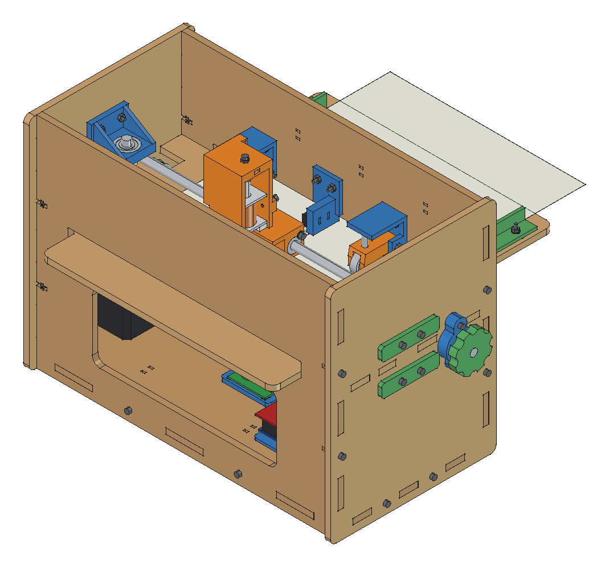
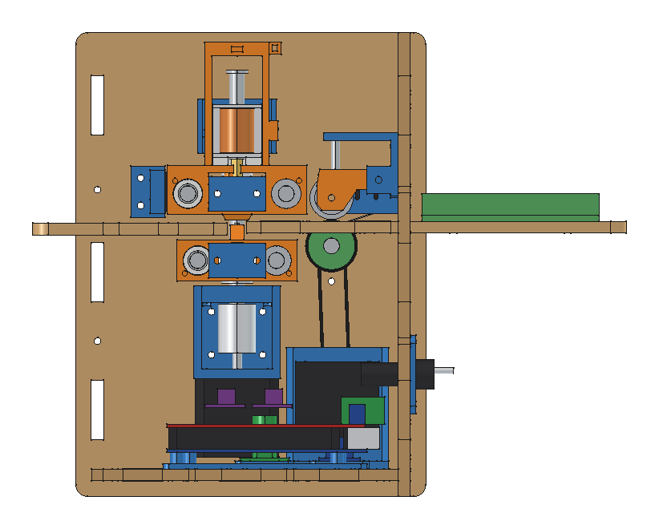
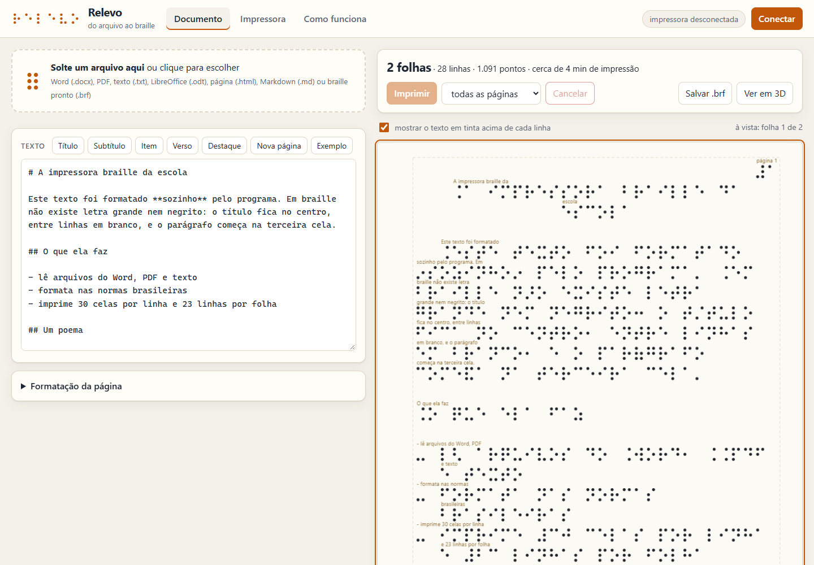
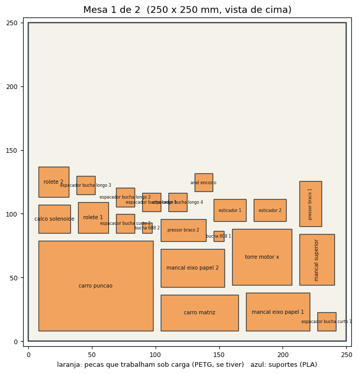
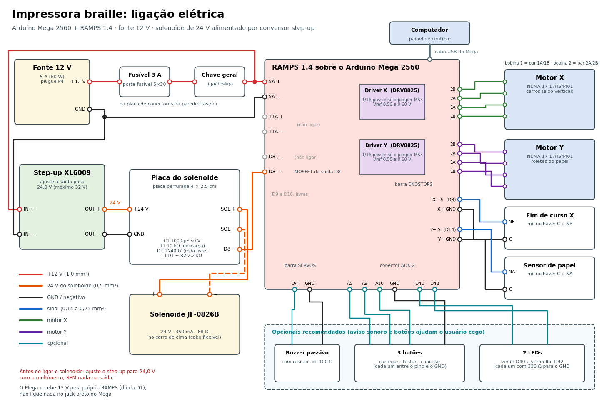

MDF cortado a laser, peças impressas em 3D e a eletrônica de uma impressora 3D comum. Você solta um arquivo do Word, um PDF ou um texto no programa e ela devolve a folha em braille, formatada nas normas brasileiras.

Um ponto por vez: um punção desce, empurra o papel para dentro de um furo e o relevo fica. O resto da máquina existe para pôr o punção no lugar certo.
O programa lê o arquivo, traduz para o braille do português e arruma as linhas: título no centro, parágrafo na terceira cela, número da página no alto.
Dois roletes de borracha puxam a folha A4 e a empurram deitada sobre a mesa, 2,5 mm por vez.
Um carro leva o solenoide por cima da folha. Outro, por baixo, leva a matriz. Os dois são puxados pelo mesmo eixo e andam sempre juntos.
Como a folha entra com o topo na frente, o texto já sai na ordem certa. É só pegar a folha pela borda da frente e virar.

O Relevo roda no navegador, sem instalar nada. Ele conversa com a impressora pelo cabo USB.

Toda cela tem o mesmo tamanho. O que no papel comum se mostra com letra grande, negrito ou cor, em braille se mostra pela posição do texto e por alguns sinais.
| No original | Em braille |
|---|---|
| Título, letra grande | centralizado, entre linhas em branco; nunca sozinho no fim da folha |
| Parágrafo | começa na 3ª cela e continua na 1ª; não se pula linha entre parágrafos |
| Itens de lista e versos | começam na 1ª cela e continuam na 3ª |
| Negrito, itálico, sublinhado | um sinal só para os três (pontos 3-5), antes e depois do trecho |
| Maiúsculas e números | sinal de maiúscula (pontos 4-6) e sinal de número (pontos 3-4-5-6) |
| Número da página | na 1ª linha, à direita; o da página do original, a partir da 3ª cela |
Depois da máquina montada, são quatro passos. O programa não precisa de instalação; o firmware se grava uma vez.
firmware/ImpressoraBraille/ImpressoraBraille.ino na Arduino IDE, escolha a placa Arduino Mega 2560 e clique em Carregar. Não usa biblioteca nenhuma.software/index.html com dois cliques.Navegador. A conversa pelo USB usa a Web Serial, que existe no Edge e no Chrome de computador (Windows, Linux, macOS e ChromeOS). No Firefox, no Safari e no celular o programa abre e formata, mas não imprime.
Tudo o que se corta, imprime e liga está no repositório, com um manual para cada parte.
Nove etapas, da preparação das peças ao alinhamento do punção com a matriz. O projeto mecânico explica cada conjunto e as contas.
Diagrama de ligação, circuito do solenoide, tabela de pinos, ajuste dos drivers e conferência antes de ligar.
Como gravar, os comandos, os parâmetros e o manual do Relevo com as regras de formatação.
27 testes com critério para passar, do multímetro na fonte à folha cheia, e os experimentos para medir o ponto.
O que é obrigatório, o que é recomendado e por quê. Os parafusos são contados pelo próprio modelo 3D.
A cela, o braille do português, as medidas do ponto e como uma impressora marca o papel.

| O quê | Onde |
|---|---|
| Impressão 3D, pronta para fatiar | cad/saida/mesas_250x250/: duas mesas em .3mf e .stl |
| Impressão 3D, peça por peça | cad/saida/stl/: 24 modelos, já deitados |
| Corte a laser do MDF 6 mm | cad/saida/corte_laser/: .dxf e .svg, 3 pranchas de 600 × 400 mm |
| Modelo 3D completo | cad/impressora_braille.FCStd (FreeCAD) e .step |
| Esquemas | eletrica/: .png e .svg |
| Firmware | firmware/ImpressoraBraille/ |

Estado do projeto. O projeto está completo e conferido no computador: modelo 3D sem interferência entre as 276 peças, firmware compilando e tradutor testado. O protótipo ainda não foi montado, então força do solenoide, altura do ponto e tração do papel ainda precisam ser medidas na máquina real. O plano de tarefas mostra o que falta.